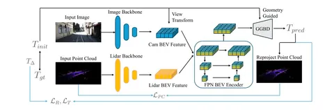
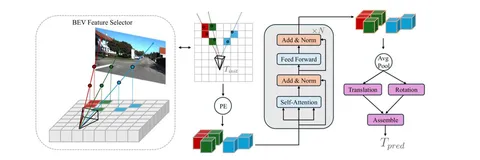

Авторы сегодняшней статьи утверждают, что создали первый targetless-подход с BEV. Опираясь на идею о том, что каждый BEV-объект соответствует определённой области в пространстве, они геометрически упростили маппинг таких объектов из разных модальностей.
Знакомьтесь, BEVСalib — модель для калибровок экстринсиков cam2lidar на основе BEVFusion.
Её архитектура (на первой схеме) почти полностью повторяет BEVFusion: изображение и облако точек попадают каждое в свой энкодер, проходят Fuser и FPN. Для предсказания матрицы калибровок результат попадает в Geometry-Guided BEV Decoder (или просто GGBD).
GGBD — разработка авторов. Она состоит из двух модулей:
После нескольких SA-блоков используется Global Average Pooling и выход из векторов перемещения и кватерниона поворота. Кватернион поворота затем преобразуют в матрицу трансформации и объединяют с вектором перемещения. Рассмотреть процессы подробнее можно на второй схеме.
Лоссы стандартные:
BEVСalib — SoTA. Результаты работы модели обгоняют по качеству такие архитектуры, как Regnet, LCCNet, CalibAnything и Koide3. На датасетах KITTI, NuScenes и собственном наборе авторов CALIBD ошибка составляет ±0,1 угла для roll, pitch и yaw вне зависимости от раскалибровки.
Модель опенсорсная: попробовать её и посмотреть демо можно на официальном сайте.
Разбор подготовил
404 driver not found

